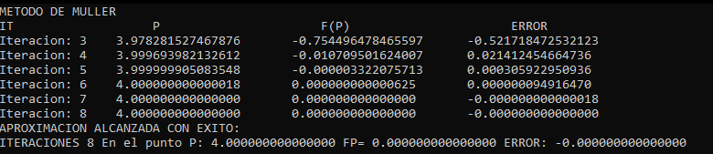
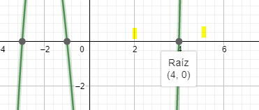
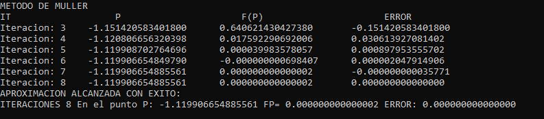
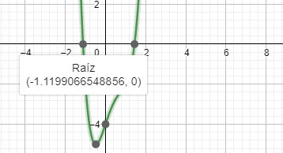
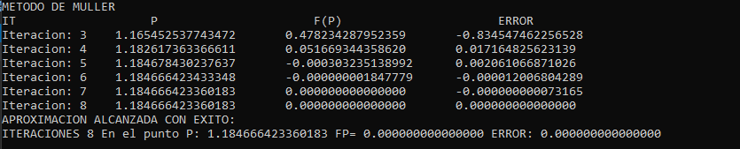
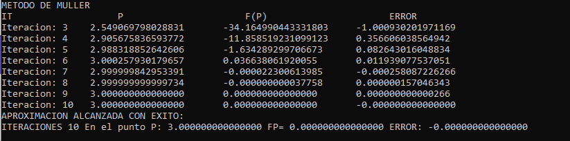
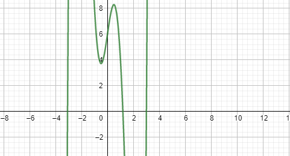

Fue presentado en 1956 por el matemático estadounidense David E. Muller (1924-2008), en el entorno del creciente número de algoritmos numéricos que surgieron con la progresiva generalización del uso de los ordenadores.
Este método utilizado para encontrar raíces de ecuaciones con raíces múltiples, y consiste en obtener los coeficientes de la parábola que pasa por tres puntos elegidos [x0, f(x0)], [x1, f(x1)] y [x2, f(x2)]. Dichos coeficientes son sustituidos en la formula cuadrática para obtener el valor donde la parábola intersecta al eje X; es decir, la raíz estimada. La aproximación se puede facilitar, si se escribe la ecuación de la parábola en una forma conveniente. f2(x) = A(x – x2)2 + B(x – x2) + C Una de las mayores ventajas de este método, es que al trabajar con la formula cuadrática es posible localizar tanto raíces reales, como raíces complejas.
El método Muller, es uno de los métodos de búsqueda de raíces, como el método de bisección, el método Regula-Falsi, el método Secante, etc. que tiene ventajas tales como:
ENTRADA: Aproximaciones x0, x1 y x2; Tolerancia TOL; Máximo de iteraciones IT
SALIDA: Solución aproximada p o mensaje de error.
h1 = x1 – x0 h2 = x2 – x1
S1 = (f(x1) – f(x0)) / h1
S2 = (f(x2) – f(x1)) / h2
d = (S2 – S1) / (h2 + h1)
i = 3
MIENTRAS i ≤ IT REPETIR
b = S2 + h2d D = (b2 – 4 f(x2)d)½
SI |b – D| < |b + D| ENTONCES
E = b + D SI NO
E = b – D
FIN SI ENTONCES
h = -2f(x2) / E
p = x2 + h
SI |h| < TOL ENTONCES
SALIDA(p)
PARAR
FIN SI ENTONCES
x0 = x1
x1 = x2
x2 = p
h1 = x1 – x0
h2 = x2 – x1
S1 = (f(x1) – f(x0)) / h1
S2 = (f(x2) – f(x1)) / h2 d = (S2 – S1) / (h2 + h1)
i = i+1
FIN MIENTRAS
SALIDA (“El método falló después de IT iteraciones”)
PARAR
Encontrar por el método de Muller la raíz de la función P(x)= x^3 - 13x -12 en el intervalo [2,5], con una toleracia de 10^-10.

En este ejemplo se utilizaron los puntos P0=2, P1=2.5 Y P3= 4.5 correspondientes al intervalo dado, y en efecto obtuvimos la respuesta en 8 iteraciones en el punto P=4 tal cual como se muestra en la gráfica
Sea P(X)= 2X^4 - 3X^3 + 3X - 4 = 0 Utilil método de Muller para calcular 1 de las 4 raices de P(X) con una toleracia de 10^-15 y con 100 iteraciones.

Para este ejercicio utilizamos los puntos P0=-2, P1=-1.5 y P2=-1 obteniendo la respuesta en 8 iteraciones en el punto P= -1.11990654885561
Considerar la función P(X)= x^5 - 10x^3 + 7x 6 = 0. Utilice el método de Muller para aproximar la raíz de la función P(X) en los siguentes valores iniciales:
• P0=1, P1=1.5, P2=2 Con una tolerancia de 10^-15
• P=0.35, P1=2.15, P2=3.55 con una tolerancia de 10^-15


Gráfica de la funci+on P(X) en donde se pueden observar 2 de las 5 raíces con las que cuenta.
Este código esta implementado para utilizarlo en visual basic 2017 en el lenguaje de programación C++. Tiene una precisión de 15 decimales.
Encuentre los links para que les sirva de referencia por alguna consulta con el desarrollo del método.